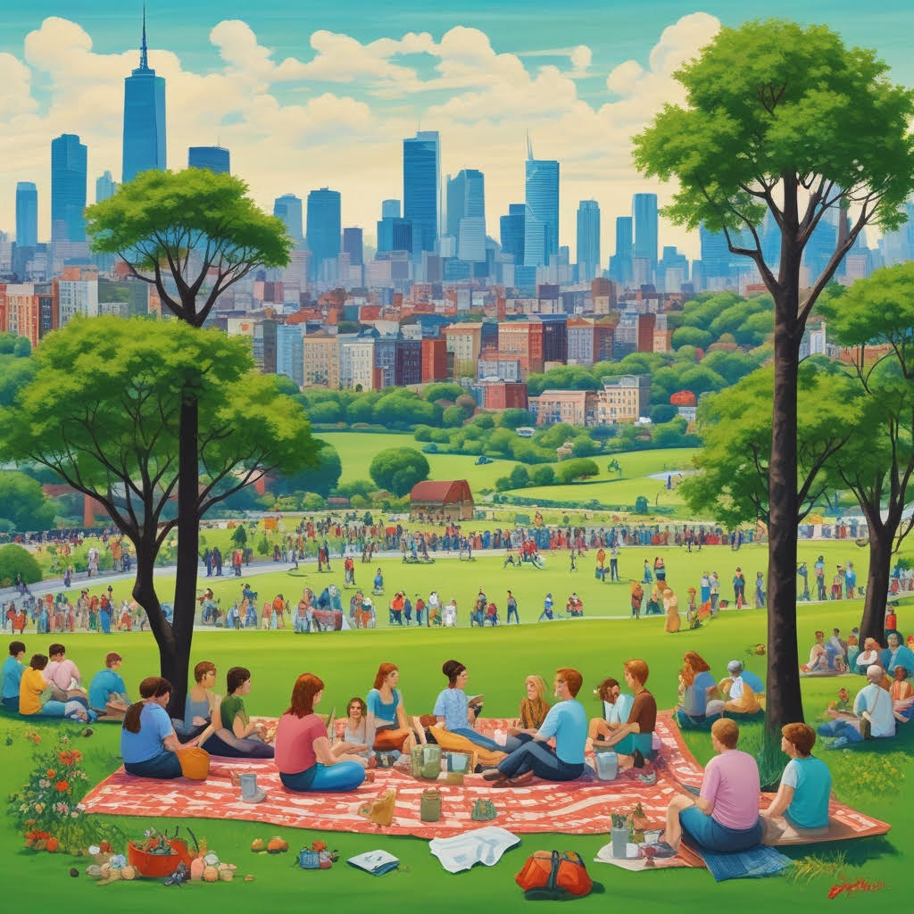

© 2025
Que bom te ver por aqui, seja muito bem vindo!
Nos dias de hoje, a conexão entre o campo e a cidade se tornou mais profunda e necessária do que nunca. Enquanto o campo oferece à cidade os frutos da terra — alimentos frescos, ar puro e a sabedoria de um ritmo mais natural —, a cidade retribui com tecnologia, acesso à informação e oportunidades de desenvolvimento. Essa relação, que já foi marcada por distâncias e contrastes, agora é tecida por estradas, redes digitais e uma consciência crescente de interdependência. O agricultor que planta sente a presença da cidade em cada inovação que usa; o morador urbano, por sua vez, redescobre o valor do campo em cada refeição, em cada respiro de natureza. É nesse equilíbrio delicado que se constrói um futuro mais sustentável, onde a força do campo e a pulsação da cidade caminham juntas, unidas pelo desejo comum de vida mais plena e conectada.
Hypetrext Markup Language (em português, Linguagem de Marcação de Hipertexto) estrutura a sua página web
Cascding Style Sheets (em português, Folha de Estilo em Cascata) estiliza a sua página web